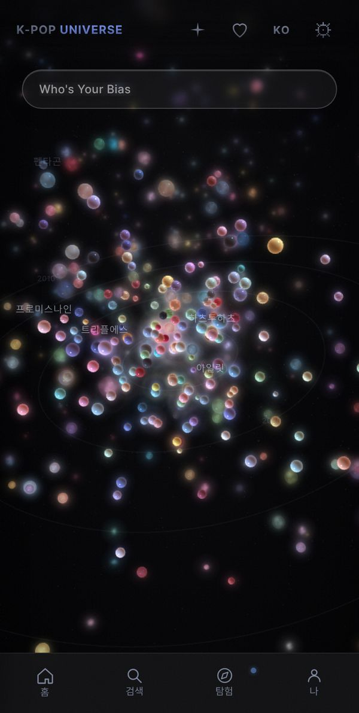
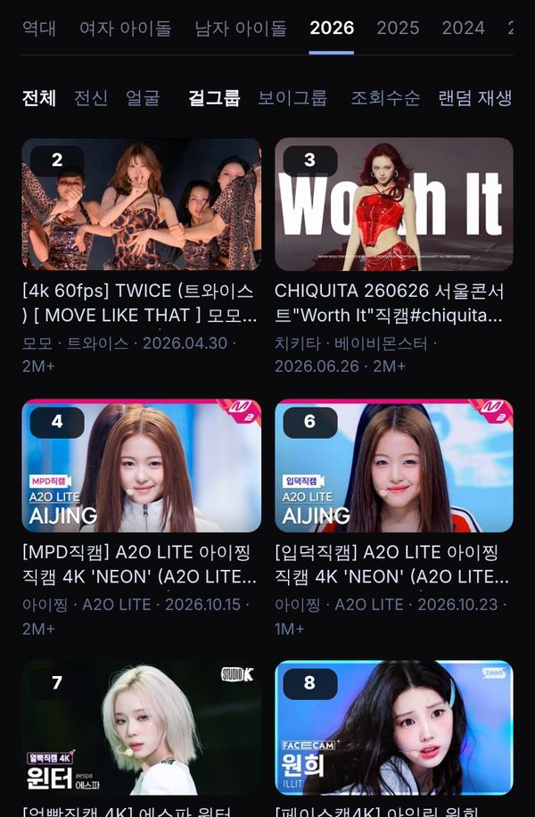
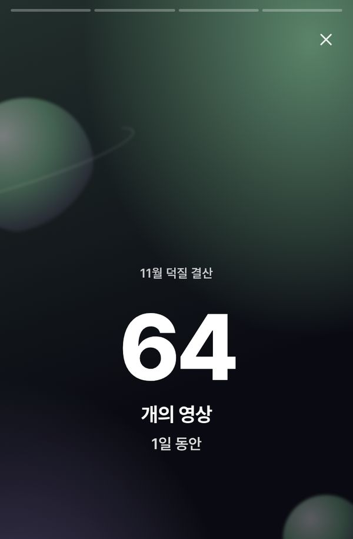

01
우주에서 찾기
그룹은 행성, 멤버는 그 주위의 별입니다. 유닛·콜라보·함께한 무대가 선으로 이어져, 한 사람에서 다음 사람으로 따라갈 수 있습니다.
행성을 누르면 그룹 카드, 별을 누르면 멤버 카드가 열립니다.

K-POP UNIVERSE
K-pop 그룹과 멤버, 그 사이의 연결을 우주 지도처럼 탐험하는 팬 아카이브입니다. 무대·직캠·앨범·기록이 한곳에 모여 있습니다.

그룹은 행성, 멤버는 그 주위의 별입니다. 유닛·콜라보·함께한 무대가 선으로 이어져, 한 사람에서 다음 사람으로 따라갈 수 있습니다.
행성을 누르면 그룹 카드, 별을 누르면 멤버 카드가 열립니다.
처음 보는 그룹도 어디서부터 볼지 고민하지 않게 순서를 잡아 둡니다. 대표곡 → 무대 → 멤버별 직캠 → 예능·자체 콘텐츠.
그룹·멤버 카드의 입덕 가이드 ›에서 시작합니다.

이름만이 아니라 원하는 장면을 그대로 적으면 됩니다. 그룹·멤버·곡·프로그램·공연까지 한 번에 찾습니다.
카리나 최근 직캠 · 아이브 음악중심 무대 · 신유 영재처럼.

연도별 직캠 조회수 순위, 곡마다 모은 멤버별 직캠, 음악방송 회차와 1위 기록. 걸그룹·보이그룹, 전신·얼굴 직캠으로 골라 볼 수 있습니다.

즐겨찾기와 최애, 컬렉션, 다녀온 공연을 남깁니다. 한 달 동안 누구를 얼마나 봤는지는 결산으로, 올해 가장 좋았던 것은 '올해의 케이팝'으로 모입니다.
나 탭에서 볼 수 있고, 기록은 가입 없이도 이 기기에 저장됩니다.

공식 유튜브 채널, 음원 사이트, 공식 SNS 등 공개된 정보를 모아 정리합니다. 영상은 YouTube 플레이어로 재생되며, 사진·영상·앨범 이미지의 권리는 각 원저작권자에게 있습니다.
잘못된 정보·태그, 추가했으면 하는 그룹이나 팬 채널이 있다면 앱의 설정 → 제보·제안(또는 영상·카드의 ⋮ → 제보하기)이나 아래 메일로 알려 주세요. 확인 후 반영합니다.
개인이 비영리로 운영하는 팬 프로젝트이며, 특정 연예기획사·아티스트와 공식 제휴 관계가 없습니다.
게시된 정보나 콘텐츠가 본인 또는 제3자의 권리를 침해한다고 판단되면 위 메일로 해당 화면(주소)과 사유를 보내 주세요. 확인 후 지체 없이 삭제 또는 비공개 처리합니다.